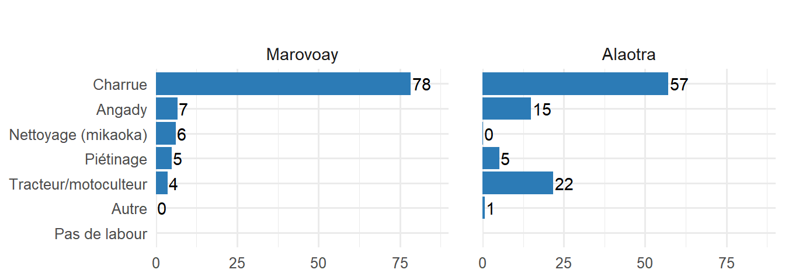
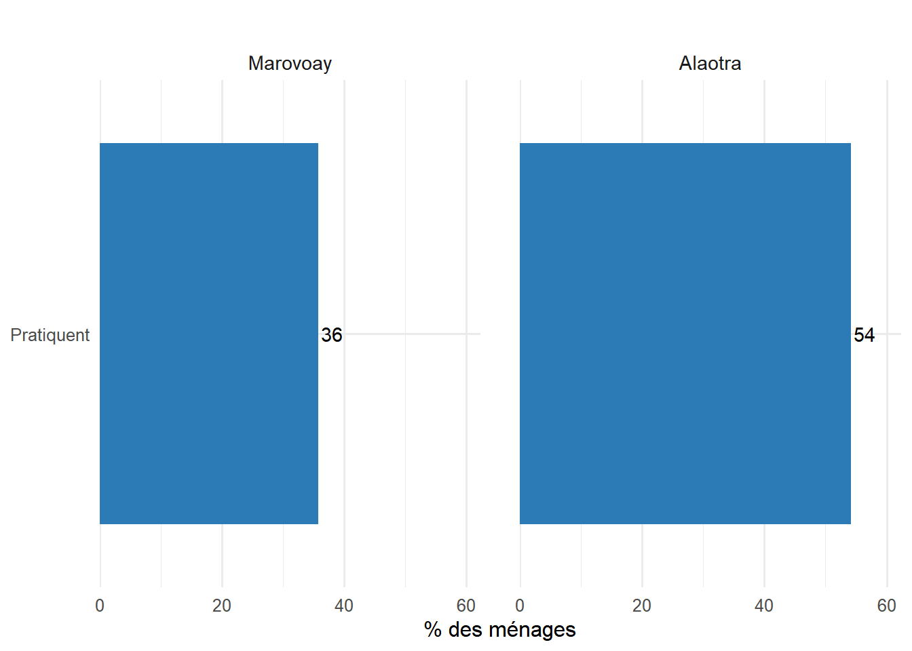

À Madagascar, l’agriculture occupe une place centrale dans l’économie et dans la vie des ménages ruraux, car elle constitue la principale source de revenus, d’emplois et de subsistance pour une grande partie de la population.
Ce chapitre analyse les activités agricoles, d’élevage, de chasse et de pêche des ménages des deux observatoires. Le chapitre sur les revenus présente déjà les contributions de ces activités au revenu total ; ici nous nous intéressons aux pratiques, aux facteurs de production et aux performances.
WarningTravail de vérification en cours
Les résultats présentés ci-dessous sont provisoires et pourront être ajustés ou enrichis par les informations supplémentaires recueillies lors des restitutions locales.
5.1 Agriculture
5.1.1 Riziculture
La riziculture est l’activité agricole dominante.
Dans l’Alaotra, 58.3 % des ménages pratiquent la riziculture. Les riziculteurs exploitent en moyenne 1.4 parcelles (superficie moyenne de 57 ares).
A Marovoay, 73.6 % des ménages pratiquent la riziculture. Les riziculteurs exploitent en moyenne 1.7 parcelles (superficie moyenne de 68 ares).
La location et le métayage, qui témoignent d’un marché foncier actif, sont plus ou moins répandus selon l’observatoire.
À Alaotra, le mode de faire valoir direct domine largement l’exploitation des parcelles avec 59.7 % des parcelles concernées (en nombre). La prise en location représente également une pratique importante avec 19.8 %, suivie par la prise en métayage qui atteint 12.9 %. Les autres formes d’accès à la terre restent marginales, notamment la mise en location avec 1.4 %, la mise en métayage avec 3.5 %, le prêt gratuit avec 2.2 % et la mise à disposition gratuite avec seulement 0.6 %.
A Marovoay, le faire valoir direct constitue également la principale forme d’exploitation des parcelles avec 46.5 % des parcelles (en nombre). La prise en métayage occupe une place importante et atteint 24.8 %, tandis que la prise en location représente 18.4 % des parcelles. Les autres modalités restent peu répandues, avec 6.3 % pour la mise en location, 2.2 % pour la mise en métayage et 1.6 % pour le prêt gratuit. Les catégories « autre » et « mise à disposition gratuite » ne représentent chacune que 0.1 % des parcelles.
Les formes liées à la mise en gage sont quasiment inexistantes dans les deux observatoires.
La gestion de l’eau est un enjeu central de la riziculture.
À Alaotra, le principal problème de maîtrise de l’eau sur les parcelles rizicoles est le manque d’eau (53%). Une part importante des parcelles ne rencontre toutefois aucun problème particulier, avec 35.2 % des cas. Les problèmes d’inondation concernent 9.6 % des parcelles, tandis que les problèmes de drainage restent limités avec 1.6 %. Les autres difficultés demeurent marginales avec seulement 0.4 %, alors que les situations non renseignées représentent 0.2 %.
À Marovoay, le manque d’eau constitue également le principal problème de maîtrise de l’eau et concerne 57.9 % des parcelles rizicoles. Les parcelles ne présentant aucun problème représentent 38 % des cas. Les problèmes d’inondation restent relativement faibles avec 3.4 %, tandis que les problèmes de drainage et les autres difficultés ne concernent chacun que 0.3 % des parcelles.
Les problèmes d’ensablement apparaissent comme quasiment absents dans les deux observatoires.
Le choix de la technique est étroitement lié aux conditions hydrologiques, à la topographie et à l’accès aux intrants.
Dans l’Alaotra, le repiquage traditionnel constitue la principale technique de culture rizicole et concerne56 % des parcelles. Le repiquage en ligne représente également une pratique importante avec 17.6 %, tandis que le semis à la volée atteint 10.4 %. Le SRI concerne 8.2 % des parcelles et le semis direct poquet représente 7.2 %. La technique SRA reste très marginale avec seulement 0.6 %, tandis que le zéro labour et le semis direct amélioré apparaissent comme quasiment absents dans l’observatoire.
A Marovoay, la culture rizicole repose très largement sur le repiquage traditionnel utilisé sur 97 % des parcelles. Les autres techniques restent très peu développées, avec seulement 1.8 % pour le repiquage en ligne, 1 % pour le semis direct poquet et 0.1 % pour le SRI. Les techniques telles que le semis à la volée, le SRA, le zéro labour et le semis direct amélioré sont quasiment inexistantes dans l’observatoire.
À Alaotra, une part importante des parcelles rizicoles ne reçoit aucun engrais, avec 40.4 % des parcelles concernées. L’utilisation exclusive de fumure organique ou de compost représente 27.3 %, tandis que l’usage exclusif d’engrais chimiques atteint 18.2 %. L’association fumure organique et engrais chimiques concerne 12.9 % des parcelles. Les autres pratiques restent très marginales, avec 0.6 % pour l’utilisation de produits chimiques pérennes, 0.2 % pour la jachère et 0.4 % pour les autres formes d’amendement. Les pratiques telles que le compost amélioré ou le guano apparaissent comme quasiment inexistantes dans l’observatoire.
À Marovoay, l’absence d’utilisation d’engrais domine largement et concerne 62.6 % des parcelles rizicoles. L’usage exclusif de fumure organique ou de compost représente 11.7 %, tandis que les engrais chimiques seuls concernent 9.8 % des parcelles. Les produits chimiques pérennes occupent également une place notable avec 15.2 %. L’association fumure organique et engrais chimiques reste très faible avec seulement 0.3 %, tandis que la jachère représente 0.4 % des parcelles. Les autres formes d’amendement demeurent quasiment absentes dans l’observatoire.
A Alaotra, le mode de travail du sol dominant sur les parcelles rizicoles est le labour à la charrue, qui concerne 57.1 % des exploitations. Le recours au tracteur ou motoculteur représente 21.7 %, tandis que l’angady est utilisé par 14.9 % des producteurs. Le piétinage reste peu pratiqué avec 5.3 % des cas. Le nettoyage manuel ou « mikaoka » est presque inexistant, avec seulement 0.2 %, et les autres modes de préparation du sol représentent 0.8 %.
A Marovoay, le travail du sol est principalement réalisé à la charrue, avec une proportion de 78 %. Les autres pratiques restent beaucoup moins fréquentes. Le recours à l’angady concerne 6.7 % des exploitations, tandis que le nettoyage au « mikaoka » représente 6.2 %. Le piétinage est pratiqué par 4.9 % des producteurs et l’utilisation du tracteur ou motoculteur ne concerne que 3.7 % des cas. Les autres modes de travail du sol sont marginaux avec 0.1 %.
Aucun cas d’absence de labour n’est signalé dans les deux observatoires.

Mode de travail du sol sur les parcelles rizicoles
Le rendement rizicole reflète à la fois les conditions agro-écologiques locales et le degré d’intensification des pratiques.
Dans l’Alaotra, le rendement rizicole médian s’établit à 2.5 t/ha (hors 5 % des valeurs extrêmes). La perception des rendements rizicoles est majoritairement négative. En effet, 41.1 % des riziculteurs considèrent que les rendements sont très mauvais, tandis que 37.7 % les jugent mauvais. Les producteurs ayant une appréciation positive restent minoritaires, avec 20.2 % qui estiment les rendements bons et seulement 1 % qui les qualifient de très bons. Cette perception traduit une forte insatisfaction des producteurs vis-à-vis des performances rizicoles observées.
A Marovoay, le rendement rizicole médian s’établit à 1.2 t/ha (hors 5 % des valeurs extrêmes). Les rendements rizicoles sont également perçus de manière défavorable par une grande partie des producteurs. La catégorie « mauvais » regroupe 46.4 % des riziculteurs, alors que 40.2 % considèrent les rendements comme très mauvais. Les avis positifs demeurent limités, avec 12.1 % des producteurs qui jugent les rendements bons et 1.3 % qui les estiment très bons. L’ensemble de ces perceptions met en évidence un ressenti globalement pessimiste concernant les niveaux de rendement rizicole dans cet observatoire.
A Alaotra, les rendements rizicoles présentent une dispersion relativement large, avec des valeurs s’étendant d’environ 0 à plus de 5 t/ha. La médiane se situe autour de 2.3 t/ha, ce qui indique que la moitié des exploitations obtiennent des rendements inférieurs à cette valeur. La majorité des rendements est concentrée entre environ 1.2 et 3.3 t/ha, traduisant une variabilité modérée des performances rizicoles. L’absence de valeurs aberrantes visibles suggère une distribution relativement homogène des rendements au sein de l’observatoire.
A Marovoay, les rendements rizicoles sont globalement concentrés à des niveaux plus faibles, avec une médiane proche de 1.2 t/ha. La majorité des exploitations enregistre des rendements compris entre environ 0.7 et 2 t/ha. Quelques valeurs aberrantes apparaissent au-dessus de 4 t/ha et atteignent près de 5 t/ha, indiquant l’existence de rares exploitations obtenant des rendements nettement supérieurs au reste des producteurs. La distribution met ainsi en évidence une forte concentration des rendements autour de faibles niveaux, accompagnée de quelques performances exceptionnellement élevées.
Code
res_r |>filter(!is.na(r23), r23 >0, !is.na(r1d), r1d >0) |>mutate(rendement_tha = (r23 / r1d) *100/1000) |>filter(rendement_tha <quantile(rendement_tha, 0.95, na.rm =TRUE)) |>expand_sites_for_profile() |>ggplot(aes(x = Observatory, y = rendement_tha, fill = Observatory)) +geom_boxplot(alpha =0.7) +labs(x =NULL, y ="Rendement (t/ha)", fill ="Observatoire") +theme_ror() +theme(legend.position ="none")
Figure 5.5: Distribution des rendements rizicoles (t/ha) par observatoire
La position topographique de la parcelle (bas-fond, plaine, tanety) détermine en grande partie les possibilités de maîtrise de l’eau et le calendrier cultural. La répartition des saisons de culture reflète les stratégies d’adaptation des riziculteurs à la variabilité pluviométrique.
À Alaotra, la topographie des parcelles agricoles est dominée par les plaines sans inondation, qui représentent 38.5 % des parcelles observées. Les plaines sujettes à des inondations périodiques occupent également une part importante avec 28.5 %, tandis que les zones de bas-fond représentent 20 %. Les parcelles situées sur des tanety correspondent à 6.1 % des observations. Les autres formes topographiques restent très marginales, notamment les réseaux d’eau et les rizières en escalier avec 0.2 % chacune, ainsi que les tay qui représentent 0.4 %.
À Marovoay, les parcelles agricoles se concentrent principalement dans les zones de bas-fond, qui représentent 34.0 % des parcelles. Les plaines sans inondation occupent également une place importante avec 30.5 %, suivies des plaines à inondation périodique qui représentent 21.3 %. Les tanety constituent 6.7 % des parcelles observées, tandis que les réseaux d’eau représentent 3.4 %. Les rizières en escalier restent très peu représentées avec 0.6 %, et les tay ne concernent que 0.1 % des parcelles.
À Alaotra, la saison principale domine très largement les pratiques de culture rizicole, avec 91.2 % des parcelles cultivées durant cette période. La contre-saison reste marginale et concerne seulement 7.6 % des parcelles, tandis que la saison intermédiaire est très peu pratiquée avec 1.2 %. Cette répartition montre une forte concentration des activités rizicoles sur une seule période culturale, correspondant au calendrier agricole principal de l’observatoire.
À Marovoay, la saison principale représente également la période de culture la plus importante avec 72 % des parcelles. Toutefois, la contre-saison occupe une place plus notable, atteignant 23.2 % des parcelles cultivées. La saison intermédiaire reste minoritaire avec 4.7 %. La distribution des saisons culturales traduit ainsi une organisation des cultures principalement centrée sur la saison principale, tout en intégrant une part non négligeable de cultures réalisées en contre-saison.
À Alaotra, les semences de riz proviennent principalement de la dernière récolte, qui représente 51 % des parcelles. Les autres agriculteurs constituent la deuxième source d’approvisionnement avec 21.6 %, suivis des commerçants avec 20.2 %. Les coopératives et organismes de développement ne concernent que 3.1 % des parcelles, tandis que les autres sources restent très faibles avec 2.4 %. Les semences fournies par le propriétaire représentent seulement 1.2 %.
À Marovoay, la dernière récolte constitue également la principale origine des semences avec 55.1 % des parcelles. Les commerçants arrivent ensuite avec 30.8 %, suivis des semences fournies par le propriétaire qui représentent 11 %. Les autres agriculteurs ne contribuent qu’à 0.7 % des approvisionnements. Les coopératives, organismes de développement et autres sources restent très peu représentés, avec des proportions avoisinant 1 % ou moins.
Code
origine_semence |>make_bar_obs(x = Origine, y_label ="% des parcelles")
A Alaotra montre une concentration massive des transactions sur une période très courte, principalement en juin avec environ 37 % des ventes, suivi de juillet pour 23 %. Ce pic de commercialisation coïncide directement avec la fin de la période de récolte du riz irrigué, qui se déroule en mai et juin dans la zone du Moyen-Est, et suit de près celle du riz pluvial récolté en avril et mai. Cette forte saisonnalité des ventes suggère que les ménages de l’Alaotra privilégient une mise sur le marché immédiate après la moisson pour répondre à des besoins rapides de liquidités. La quasi-absence de ventes significatives en dehors de cette fenêtre de trois mois souligne une dépendance étroite de l’économie domestique vis-à-vis de la campagne de récolte principale.
À Marovoay, le profil des ventes est nettement plus étalé, avec un plateau soutenu entre juin et août où les ventes oscillent entre 16 % et 17 %, suivi d’un sommet en septembre atteignant 23 %. Ce rythme de vente plus régulier s’explique par la multiplicité des cycles de culture dans le Nord-Ouest, où les récoltes des campagnes Atriatry et Asara s’échelonnent entre avril et juin. Le pic majeur observé en septembre correspond précisément au déclenchement de la récolte de la campagne Jeby, la plus importante de la zone, qui s’étend de mi-septembre à novembre. Cette répartition témoigne d’une stratégie de commercialisation mieux répartie sur l’année, permise par l’accès à plusieurs récoltes successives qui alimentent le marché de façon continue.
À Alaotra, la distribution des prix de vente du paddy montre une forte concentration des transactions autour de 1300 à 1700 Ar/kg. Le pic principal se situe approximativement autour de 1400 à 1500 Ar/kg, avec un nombre élevé de transactions enregistrées dans cette tranche. Les prix très faibles, inférieurs à 1000 Ar/kg, restent peu fréquents, tout comme les prix élevés dépassant 2000 Ar/kg. La distribution présente ainsi une concentration importante autour des valeurs moyennes, ce qui traduit une relative stabilité des prix observés sur ce marché. Quelques transactions isolées apparaissent néanmoins à des niveaux de prix plus élevés, indiquant l’existence de situations ponctuelles de vente à des tarifs supérieurs.
À Marovoay, les transactions sont principalement regroupées entre 1200 et 1800 Ar/kg. Les fréquences les plus importantes se situent autour de 1400 à 1600 Ar/kg, où l’on observe les barres les plus élevées de l’histogramme. Les transactions à des prix très bas ou très élevés sont relativement rares, ce qui montre que la majorité des ventes s’effectue dans une fourchette de prix bien définie. La distribution reste globalement concentrée autour des valeurs centrales, avec quelques observations dispersées vers les extrémités, traduisant des variations occasionnelles des prix sur le marché local.
Code
res_dc21 |>filter(!is.na(dc24), dc24 >0, dc24 <quantile(dc24, 0.98, na.rm =TRUE)) |>expand_sites_for_profile() |>ggplot(aes(x = dc24)) +geom_histogram(fill ="#2c7bb6", bins =30) +facet_wrap(~Observatory) +labs(x ="Prix du paddy (Ar/kg)", y ="Nombre de transactions") +theme_ror()
Figure 5.11: Distribution du prix de vente du paddy (Ar/kg)
Le bilan rizicole reconstitue les flux de paddy au niveau du ménage : stock initial, production, transactions (achat, vente, rente, dons), autoconsommation alimentaire, utilisation en semences, et stock final.
L’ensemble met en évidence une organisation des flux de paddy orientée à la fois vers les besoins alimentaires du ménage et la gestion des réserves après commercialisation.
À Alaotra, le bilan rizicole moyen par ménage montre que la production totale de paddy atteint environ 2100 kg. Une grande partie de cette production est destinée à la vente, avec près de 1218 kg commercialisés. Les ménages conservent également une part importante pour l’autoconsommation, estimée à 444 kg pour l’alimentation du ménage. Le stock restant en fin de campagne s’élève à 513 kg, ce qui traduit une capacité de conservation relativement importante. Les échanges en nature occupent aussi une place notable, avec 200 kg versés et 206 kg perçus sous forme de rente. Les autres utilisations, comme les dons, les semences ou les paiements en nature, représentent des quantités plus faibles dans l’ensemble.
À Marovoay, la production totale moyenne par ménage est d’environ 1977 kg de paddy. Sur cette quantité, 759 kg sont vendus, tandis que 490 kg sont destinés à l’alimentation du ménage. Le stock conservé en fin de campagne atteint 626 kg, ce qui montre l’importance de la réserve constituée après récolte. Les rentes versées en nature représentent 152 kg, alors que les rentes perçues restent limitées à 17 kg. Les autres postes, notamment les dons, les achats de paddy, les semences ou les paiements en main-d’œuvre en nature, concernent des volumes relativement réduits.
Le portefeuille de cultures reflète les opportunités de marché et les conditions pédoclimatiques propres à chaque observatoire.
À Alaotra, la majorité des ménages pratiquent un nombre limité de cultures non rizicoles. Environ 56.2 % des ménages cultivent deux cultures non rizicoles, tandis que 26.2 % en cultivent trois. Les ménages ayant quatre cultures représentent 11.6 % de l’ensemble. Au-delà de ce niveau, les proportions deviennent très faibles, avec seulement quelques ménages pratiquant cinq, six ou davantage de cultures. Cette distribution montre que les systèmes de production restent principalement concentrés sur un petit nombre de cultures complémentaires au riz, traduisant une diversification agricole modérée au sein des exploitations.
À Marovoay, la distribution indique également une concentration des ménages autour d’un faible nombre de cultures non rizicoles. La majorité des ménages, soit environ 67.8 %, pratiquent deux cultures non rizicoles, tandis que 30.3 % en cultivent trois. Les ménages ayant un nombre plus élevé de cultures demeurent très rares, avec seulement quelques cas observés pour quatre ou six cultures. Cette structure traduit une diversification agricole relativement limitée, où les exploitations privilégient un nombre restreint de spéculations non rizicoles dans leur système de production.
A Alaotra, les cultures non rizicoles les plus pratiquées par les ménages sont principalement le haricot et l’arachide. Le haricot domine largement avec 49.4 % des ménages pratiquants, suivi de l’arachide qui concerne 30.7 % des ménages. Le voanjobory occupe également une place importante avec 7 %, tandis que le maïs représente 4 %. Les autres cultures apparaissent de manière beaucoup plus marginale, notamment le pois du Cap, le soja, la tomate, le voanemba ou encore le manioc, dont les proportions restent généralement inférieures à 2 %. Plusieurs cultures comme le concombre, le piment, la laitue ou la patate douce sont pratiquées par une très faible part des ménages, traduisant une diversification agricole limitée à certaines exploitations.
A Marovoay, les cultures non rizicoles les plus fréquentes sont dominées par l’arachide, pratiquée par 61 % des ménages. Le haricot occupe la deuxième position avec 20.6 %, tandis que le voanjobory représente 6.6 % des ménages pratiquants. Le maïs et le pois du Cap enregistrent respectivement 3 % et 3.7 %. D’autres cultures comme le manioc, le voatabia, le melon ou encore l’oignon restent faiblement représentées avec des proportions proches ou inférieures à 2 %. Certaines cultures maraîchères et cultures de diversification ne concernent qu’une minorité très réduite de ménages, ce qui montre une présence plus ponctuelle de ces spéculations dans les systèmes de production locaux.
Code
top_cultures_plot |>make_bar_obs(x = Culture, y_label ="% des ménages")
Figure 5.13: Cultures non rizicoles les plus fréquentes (nb de ménages pratiquant)
5.1.2.2 Fertilisation et production des autres cultures
L’accès aux engrais (organiques et chimiques) est un facteur déterminant de la productivité des cultures non rizicoles.
Les pratiques de fertilisation diffèrent sensiblement entre les deux observatoires en raison de l’accessibilité et du coût des intrants.
A Alaotra, l’utilisation d’engrais dans les parcelles de cultures non rizicoles reste relativement limitée. Plus de la moitié des parcelles, soit 54.6 %, ne reçoivent aucun apport d’engrais. Parmi les parcelles fertilisées, le fumier-compost constitue le principal type d’engrais utilisé avec 26.3 %. Les engrais chimiques sont employés dans 12.7 % des parcelles, tandis que l’association d’engrais chimique et de fumier représente 6.8 %. L’utilisation de l’aire enfouie demeure très marginale avec seulement 0.2 %. Ces résultats montrent une prédominance des pratiques sans fertilisation ou reposant sur des apports organiques dans les systèmes de production non rizicoles.
A Marovoay, la très grande majorité des parcelles de cultures non rizicoles ne bénéficie d’aucun apport d’engrais. En effet, 91.4 % des parcelles sont exploitées sans fertilisation. Le fumier-compost est utilisé dans 7.1 % des parcelles, alors que les engrais chimiques seuls ne concernent qu’environ 1 % des parcelles. Les autres formes de fertilisation sont quasiment absentes dans cet observatoire. Cette situation traduit une faible intensité d’utilisation des intrants fertilisants dans les cultures non rizicoles pratiquées par les ménages.
Au-delà des mesures quantitatives, la perception subjective des rendements par les agriculteurs constitue un indicateur complémentaire de la performance de la campagne. Elle reflète à la fois les résultats objectifs et les attentes des producteurs.
À Alaotra, la perception des rendements des cultures non rizicoles au cours de la campagne est globalement mitigée. Une part importante des producteurs considère que les rendements ont été mauvais, avec 46.7 % des pratiquants partageant cet avis. À l’inverse, 35.1 % estiment que les rendements ont été bons, tandis que seulement 2.7 % les jugent très bons. Les perceptions négatives restent néanmoins marquées, puisque 15.4 % des producteurs qualifient les rendements de très mauvais. Ces résultats traduisent des difficultés de production ressenties par une grande partie des exploitants agricoles au cours de la campagne. Par rapport à l’année précédente, les producteurs de ce grenier à riz perçoivent majoritairement une baisse des rendements. En effet, 54.3 % déclarent que les rendements ont diminué, contre 24.4 % qui observent une augmentation. Une proportion de 21.3 % considère que les rendements sont restés inchangés. Cette tendance met en évidence un sentiment général de recul des performances agricoles des cultures non rizicoles dans la zone, malgré l’existence d’une minorité de producteurs ayant constaté une amélioration.
À Marovoay, les perceptions des producteurs concernant les rendements de la campagne sont également dominées par des appréciations négatives. La majorité des pratiquants, soit 53.0 %, juge les rendements mauvais, tandis que 26.2 % les considèrent très mauvais. Les avis positifs restent plus limités, avec 20.1 % des producteurs estimant les rendements bons et seulement 0.7 % les qualifiant de très bons. Ces données montrent que les exploitants agricoles ont majoritairement ressenti des difficultés importantes dans la production des cultures non rizicoles durant cette campagne. Concernant l’évolution des rendements par rapport à l’année précédente, les perceptions y restent principalement orientées vers une baisse. Près de la moitié des producteurs, soit 49.7 %, déclarent une diminution des rendements. Toutefois, une part importante de 41.5 % estime que les rendements sont restés inchangés, tandis que seulement 8.2 % observent une amélioration. Ces résultats traduisent une situation perçue comme relativement stable pour une partie des producteurs, mais marquée dans l’ensemble par une tendance défavorable des performances agricoles.
Les jardins potagers et la cueillette de produits sauvages complètent les activités agricoles des ménages. Ils jouent un rôle important dans la diversification alimentaire, en particulier pendant la période de soudure.
À Alaotra, les activités de jardin potager et d’exploitation forestière occupent une place importante dans les pratiques des ménages. Le jardin potager est pratiqué par 70 % des ménages, ce qui montre une forte implication des populations dans les cultures destinées à l’alimentation familiale et parfois à la commercialisation de proximité. L’exploitation forestière concerne également plus de la moitié des ménages, avec un taux de pratique de 54 %. Cette importance accordée aux ressources forestières traduit le rôle qu’elles jouent dans les moyens d’existence des ménages.
À Marovoay, les pratiques de jardin potager et d’exploitation forestière restent présentes mais concernent une proportion plus limitée de ménages. Le jardin potager est pratiqué par 46 % des ménages, indiquant que cette activité contribue néanmoins à l’alimentation et aux ressources domestiques d’une partie importante de la population. L’exploitation forestière touche quant à elle 36 % des ménages.
Code
pct_oui(res_jpchphef, "jpa", "Jardin potager") |>bind_rows(pct_oui(res_jpchphef, "efa", "Exploitation forestière")) |>gt() |>tab_header(title ="Taux de pratique (% des ménages)") |>cols_label(Item ="Activité")
Table 5.3: Pratique du jardin potager et de la cueillette
A Alaotra, les produits de jardin les plus fréquemment cueillis sont nettement dominés par les mangue (manga), cité par 58.9 % des ménages. Les arbres fruitiers (voanazo hazo) occupent également une place importante avec 41.7 %, suivi par les brèdes (anana) à 30.4 % et le legioma laha à 21.7 %. Les autres produits sont mentionnés par des proportions plus modestes de ménages, notamment les goyaves (goavy) (16.6 %), le haricot vert (16.1 %) et le concombre (10.7 %). Plusieurs produits restent faiblement représentés, comme les bananes (akondro fontsy) et les pêches (paiso), chacun autour de 4.2 à 4.8 %, tandis que les courgettes (kozety), les cannes à sucre (fary) ou encore les fruits du Jacquier (ampalibe) sont cités par moins de 3 % des ménages.
A Marovoay, les mangues (manga) apparaissent également comme le produit le plus fréquemment cueilli, avec 71.4 % des ménages concernés. Le deuxième produit le plus cité est la brède (anana) avec 20.2 %, tandis que la citrouille (voatavo) atteint 14.3 % et le concombre 10.9 %. Certains produits restent marginaux dans les pratiques de cueillette, notamment le voankazo hazo et le legioma laha, qui ne dépassent pas 1.3 %. D’autres produits comme les bananes (akondro fontsy) représentent 10.1 % des ménages, alors que les courgettes (kozety), les cannes à sucre (fary), le fruit du Jacquier (ampalibe) et le pinakena sont mentionnés par moins de 3 % des ménages.
Code
top_jardin_plot |>make_bar_obs(x = Produit, y_label ="% des ménages")
Figure 5.17: Produits de jardin / cueillette les plus fréquents
L’exploitation des ressources forestières (bois de chauffe, charbon, bois d’œuvre, plantes médicinales) constitue une activité complémentaire pour de nombreux ménages. Les produits forestiers sont essentiels à la fois comme source d’énergie domestique et comme revenu d’appoint.
Code
pratique_foret |>make_bar_obs(x = Type, y_label ="% des ménages")

Figure 5.18: Part des ménages pratiquant l’exploitation forestière
A Alaotra, parmi les ménages pratiquant l’exploitation forestière, les principaux produits sont très largement dominés par le bois de chauffe, cité par 99.6 % d’entre eux. Le charbon est également presque systématiquement exploité, avec une proportion de 98.9 %, tandis que le bois d’oeuvre concerne 94.6 % de ces ménages. Ces résultats montrent que l’exploitation forestière dans cet observatoire repose essentiellement sur quelques produits largement répandus parmi les ménages exploitants.
A Marovoay, parmi les ménages pratiquant l’exploitation forestière, le bois de chauffe constitue aussi le principal produit, utilisé par 99.5 % d’entre eux. Le charbon occupe une place tout aussi importante avec 98.9 %, alors que le bois d’oeuvre est mentionné par 89.9 % de ces ménages. L’exploitation forestière dans cet observatoire se caractérise ainsi par une forte concentration autour des produits énergétiques et du bois de chauffage.
Le choix des espèces reflète les conditions agro-écologiques, les traditions locales et les opportunités de marché.
A Alaotra, l’espèce la plus fréquemment élevée parmi les ménages pratiquant l’élevage est l’akoho, présente chez 69.2 % d’entre eux. Les kisoa arrivent ensuite avec 29.6 %, suivis des gisa (22.4 %) et des gana (16.9 %). Les bovins restent moins répandus, avec 14.8 % pour les omby miasa, 11.8 % pour les omby vavy et 7.3 % pour les omby hafa. Les ondry concernent 4.8 % des ménages pratiquants, tandis que le voron-tsiloza demeure marginal avec 1.2 %. Les osy et le trondro sont absents des déclarations dans cet observatoire.
A Marovoay, l’akoho est également l’espèce la plus fréquemment élevée parmi les ménages pratiquants, avec 53.5 %. Les gana occupent la deuxième position avec 44.7 %, suivis des omby miasa (36.1 %) et des kisoa (27.3 %). Les omby vavy concernent 19.0 % des ménages pratiquants, tandis que les omby hafa représentent 12.8 % et les ondry 7.5 %. Les autres espèces restent marginales, notamment les gisa (2.4 %), les voron-tsiloza (2.1 %) et les osy (1.3 %). Le trondro n’est pas déclaré dans cet observatoire.
Code
especes_elevage |>make_bar_obs(x = Espece, y_label ="% des ménages pratiquant l'élevage")
Figure 5.20: Espèces élevées (% des ménages pratiquant)
L’élevage répond à trois objectifs principaux : l’épargne/assurance (constitution d’un capital mobilisable en cas de choc), l’autoconsommation (lait, œufs, viande) et la vente. La hiérarchie de ces objectifs varie selon l’espèce.
L’épargne/assurance est le motif principal pour les bovidés, tandis que la vente domine pour les porcs et la consommation pour la volaille.
L’épargne/assurance est la modalité qui présente globalement les proportions les plus élevées dans la majorité des observatoires. Elle dépasse souvent 50.0 % des ménages éleveurs et atteint même plus de 80.0 % à Omby Hafa (83.4 %), Omby Miasa (81.0 %) et Omby Vavy (79.8 %). Cela montre que cette fonction constitue l’objectif prioritaire de l’élevage pour la plupart des ménages.
La vente occupe généralement la deuxième position. Les proportions varient entre 13.9 % et 41.0 %, avec les valeurs les plus fortes observées à Kisoa (41.0 %), Gisa (39.8 %) et Osy (38.7 %). Cette modalité reste donc importante, mais elle demeure inférieure à l’épargne/assurance dans la plupart des cas.
L’autoconsommation représente enfin la modalité la moins importante dans presque tous les observatoires. Les proportions sont souvent inférieures à 10.0 %, notamment à Kisoa et Omby Hafa (2.7 %). Les niveaux les plus élevés sont enregistrés à Gisa (25.1 %) et Akobo (25.0 %), mais cette modalité reste globalement secondaire par rapport aux deux autres objectifs.
Code
obj_labs <-c(ele5a ="Épargne / assurance", ele5b ="Autoconsommation", ele5c ="Vente")res_ele |>filter(ele_lig0 !="", !is.na(ele_lig0)) |>mutate(Espece =str_to_title(ele_lig0)) |>pivot_longer(cols =c(ele5a, ele5b, ele5c), names_to ="Objectif_code", values_to ="val") |>filter(val ==1) |>mutate(Objectif = obj_labs[Objectif_code]) |>expand_sites_for_profile() |>count(Observatory, Espece, Objectif) |>ggplot(aes(x =reorder(Espece, n), y = n, fill = Objectif)) +geom_col(position ="fill") +coord_flip() +scale_y_continuous(labels = percent) +facet_wrap(~Observatory) +labs(x =NULL, y ="Répartition des objectifs", fill ="Objectif") +theme_ror()
Figure 5.21: Objectifs de l’élevage par espèce (% des ménages éleveurs)
La dynamique du cheptel dépend des entrées (naissances, achats) et des sorties (ventes, pertes, abattages). Les pertes d’animaux, liées aux maladies, au vol ou aux catastrophes naturelles, représentent un risque économique majeur pour les éleveurs.
La volaille (Akoho) subit les pertes les plus massives dans les deux observatoires.
A Alaotra, les pertes de bétail concernent principalement les volailles (Akoho), avec environ 160 ménages ayant subi des pertes. Les oies (Gisa) arrivent ensuite avec près de 25 ménages touchés, suivis des canards (Gana) et des cochons (Kisoa) avec environ 15 ménages chacun. Les ovins (Ondry) enregistrent des pertes plus limitées, autour de 5 ménages. Les autres espèces, notamment les zébus et les dindons Omby Miasa, Omby Vavy, Voron-tsilozà et Omby Hafa, présentent des effectifs très faibles, proches de 1 à 3 ménages concernés.
A Marovoay, les volailles (Akoho) demeurent également l’espèce la plus touchée, avec environ 120 ménages ayant subi des pertes. Les canards (Gana) occupent la deuxième position avec près de 70 ménages concernés. Les cochons (Kisoa) enregistrent environ 15 ménages touchés, tandis que les autres espèces présentent des niveaux très faibles. Les ovins (Ondry), caprins (Osy), et Omby Miasa, Omby Vavy (zébus) et dindons (Voron-Tsilozà) concernent seulement quelques ménages, traduisant une fréquence plus réduite des pertes pour ces espèces dans cet observatoire.
Code
pertes_elevage |>make_bar_obs(x = Espece, y = n, show_pct =FALSE,y_label ="Nb ménages ayant subi des pertes")
Figure 5.22: Ménages ayant subi des pertes de bétail
Outre la vente d’animaux sur pied, l’élevage génère des produits dérivés (lait, œufs, miel, fumier) qui contribuent à l’alimentation et aux revenus du ménage.
A Alaotra, les produits de l’élevage les plus fréquemment déclarés par les ménages sont le lait (ronono) avec 99 %, suivi de les oeufs (atody) à 91.3 %. Le yaourt/habobo représente également une part importante avec 85.6 %, tandis que la viande de zébu (hena) atteint 83.7 %. En revanche, les autres produits restent très peu déclarés par les ménages. La viande de mouton (henan’ondry) ne concerne que 1.9 % des déclarations, alors que la viande de volaille (vorona) et le porc (henan-kisoa) représentent chacun 1 %.
A Marovoay, le lait (ronono) et les oeufs (atody) sont déclarés par 99 % des ménages. Le yaourt/habobo atteint 93.9 %, ce qui montre également une forte présence de ce produit dans les habitudes des ménages. La viande de zébu (hena) est déclaré par 88.9 % des ménages. Les autres produits restent marginaux, avec 7.1 % pour la viande de mouton (henan’ondry), et seulement 1 % pour la viande de volaille (vorona) ainsi que les produits de l’aquaculture (trondro nompiana).
La chasse et la pêche constituent des activités complémentaires, souvent saisonnières, qui contribuent à la diversification alimentaire et au revenu, en particulier dans les zones proches des plans d’eau. La principale raison de ces activités est pour l’autoconsommation.
A Alaotra, la pratique de la chasse et de la pêche concerne 18.3 % des ménages.
A Marovoay, 34.5 % des ménages déclarent pratiquer la chasse et la pêche. .
Code
pct_oui(res_jpchphef, "chapha", "Chasse / Pêche") |>gt() |>tab_header(title ="Pratique de la chasse et de la pêche (% des ménages)") |>cols_label(Item ="Activité")
Table 5.5: Taux de pratique de la chasse et de la pêche
Pratique de la chasse et de la pêche (% des ménages)
À Alaotra, les poissons (trondro) dominent très largement les débarquements avec environ 75 mentions enregistrées, ce qui montre leur place centrale dans l’activité de pêche observée. Les Tilapia arrivent loin derrière avec près de 8 mentions, suivis et des fibata et alevins (pirina) qui représentent chacun environ 3 à 4 mentions.
À Marovoay, les poissons (trondro) occupent également une place prépondérante avec près de 95 mentions, ce qui en fait l’espèce la plus représentée dans les captures enregistrées. Les kalapia et les filao suivent avec environ 5 à 7 mentions chacun, alors que certaines espèces démersales, comme les pirina et drakabato, restent faiblement représentées avec moins de 5 mentions.
Code
chasse_especes |>make_bar_obs(x = Espece, y = n, show_pct =FALSE,y_label ="Nombre de mentions")
À Alaotra, la principale raison évoquée pour la chasse ou la pêche est la vente, qui représente 52.5 % des mentions enregistrées. L’alimentation constitue également une motivation importante avec 44.6 % des réponses, montrant que les activités de prélèvement servent aussi à satisfaire les besoins alimentaires des ménages. Les autres motivations restent très marginales, notamment l’élimination des destructeurs de récolte qui ne représente que 2 % des mentions, tandis que les usages rituels sont presque inexistants avec seulement 1 %. Les résultats traduisent ainsi une forte orientation économique des activités de chasse et de pêche dans cet observatoire.
À Marovoay, l’alimentation et la vente apparaissent comme les deux motivations dominantes des activités de chasse et de pêche. L’alimentation représente environ 40 % des mentions, tandis que la vente atteint 39.5 %, ce qui montre l’importance simultanée des besoins de subsistance et des revenus tirés de ces activités. Cette répartition met en évidence une utilisation des ressources animales à la fois pour la consommation des ménages et pour les activités économiques locales.
Code
chasse_raison |>make_bar_obs(x = Raison, y_label ="% des mentions")
Figure 5.24: Raisons de la chasse/pêche par observatoire
La fréquence de pêche et son calendrier saisonnier dépendent du régime hydrologique local. Les périodes de hautes eaux correspondent généralement à une activité de pêche plus intense.
À Alaotra, la fréquence de chasse-pêche la plus souvent mentionnée est la pratique journalière, citée par 31.7 % des répondants. La fréquence hebdomadaire arrive ensuite avec 28.7 % des mentions, traduisant une pratique régulière pour une part importante des enquêtés. Les activités réalisées une fois par mois représentent 13.9 %, tandis que les pratiques plus espacées restent minoritaires. Les fréquences annuelles atteignent 8.9 %, suivies des pratiques effectuées toutes les deux semaines avec 7.9 %, puis tous les six mois avec 5 %. Enfin, la fréquence bimensuelle est la moins représentée avec 4 % des mentions. Ces résultats montrent une prédominance des pratiques fréquentes au sein de cet observatoire.
À Marovoay, la fréquence de chasse-pêche quotidienne domine largement avec 41.2 % des mentions. La pratique hebdomadaire occupe également une place importante, représentant 38.7 % des réponses. Les activités mensuelles concernent 13.9 % des enquêtés, alors que les autres fréquences apparaissent beaucoup plus marginales. La pratique toutes les deux semaines représente 4.1 % des mentions, tandis que les fréquences annuelles et bimensuelles ne totalisent chacune que 1 %. Cette distribution met en évidence une forte concentration des activités de chasse-pêche dans des rythmes réguliers et rapprochés.
Code
frequence_peche |>make_bar_obs(x = Frequence, y_label ="% des mentions")
A Alaotra, une intensification de l’activité de la chasse et de la pêche à partir du mois de janvier, pour atteindre un sommet en avril avec 55 mentions, suivi du mois de mai avec 43 mentions est observée . Ce pic d’activité se situe à la transition entre la fin de la période humide (octobre-avril) et le début de la saison sèche (mai-septembre). Les mois les moins actifs correspondent au cœur de la saison sèche et au début de la saison des pluies, notamment en juillet avec seulement 11 mentions et en novembre où elles tombent à leur niveau le plus bas avec 8 mentions. Cette recrudescence des activités de prélèvement en avril et mai coïncide précisément avec la période de récolte du riz pluvial (avril-mai) et le déclenchement de celle du riz irrigué (mai-juin) documentée dans la zone du Moyen-Est. Le recours à la chasse et à la pêche semble s’intensifier juste avant que la production de la grande saison rizicole ne soit pleinement disponible, jouant potentiellement un rôle de complément alimentaire ou de source de revenus immédiate durant cette phase charnière du calendrier agricole.
À Marovoay, la saisonnalité est marquée par une concentration massive des activités de chasse et de pêche durant la période humide, avec un pic exceptionnel en février atteignant 138 mentions mensuelles, suivi de près par le mois de mars avec 131 mentions. L’activité chute de manière spectaculaire dès le début de la saison sèche, passant de 80 mentions en avril à seulement 49 en mai, et reste à un niveau relativement bas et stable jusqu’en octobre où elle s’établit à 40 mentions. Cette dynamique suggère que les conditions de la période humide sont particulièrement nécessaires à la pratique intensive de ces activités dans le Nord-Ouest. Le pic observé en février et mars intervient durant une phase de soudure majeure , alors que les récoltes des campagnes de riz Asara et Atriatry ne débutent qu’en avril. L’activité de chasse et de pêche diminue fortement au moment précis où ces récoltes commencent. Elle fonctionne ici comme une stratégie de survie ou de diversification essentielle pendant les mois les plus difficiles de la saison des pluies, s’effaçant dès que les campagne de récolte mobilisent la main-d’œuvre des ménages.
L’analyse de la main-d’œuvre agricole permet de caractériser le recours des ménages aux travailleurs extérieurs en examinant les types d’emploi, saisonniers ou permanents, ainsi que les opérations culturales clés mobilisant le salariat ou l’entraide.Le recours à la main-d’œuvre salariée ou à l’entraide est très élevé.
5.4.1 Emploi de main d’oeuvre
L’ampleur du recours à la main d’œuvre extérieure dépend de la superficie cultivée, du type de culture et de la disponibilité de main d’œuvre familiale.
À Alaotra, le recours à la main-d’œuvre agricole concerne principalement la main-d’œuvre non permanente, mentionnée par 46.8 % des ménages. La main-d’œuvre permanente reste beaucoup moins utilisée, avec seulement 7 % des ménages concernés. Ces résultats traduisent une préférence pour une main-d’œuvre occasionnelle, mobilisée selon les besoins saisonniers des activités agricoles.
A Marovoay, Le recours à la main d’œuvre extérieure (salariée ou par entraide) concerne 58.8 % des ménages. En revanche, la main-d’œuvre permanente demeure très faiblement mobilisée avec 4 % des mentions. Cette situation montre que les ménages agricoles s’appuient surtout sur une main-d’œuvre temporaire pour assurer les travaux liés aux activités agricoles.
Code
mo_np <-pct_oui(res_mp0, "mora", "Main d'oeuvre non permanente")mp0_col <-intersect(c("mp0", "mp0a"), names(res_mp0))[1]if (!is.na(mp0_col)) { mo_p <-pct_oui(res_mp0, mp0_col, "Main d'oeuvre permanente")bind_rows(mo_np, mo_p) |>gt() |>tab_header(title ="Recours à la main d'oeuvre agricole (% des ménages)") |>cols_label(Item ="Type")} else { mo_np |>gt() |>tab_header(title ="Recours à la main d'oeuvre non permanente (% des ménages)") |>cols_label(Item ="Type")}
Table 5.6: Recours à la main d’oeuvre agricole
Recours à la main d'oeuvre agricole (% des ménages)
5.4.2 Opérations nécessitant de la main d’oeuvre salariée
Les trois opérations rizicoles principales (travail du sol, sarclage, moisson) mobilisent des volumes de main d’œuvre différents. Le salaire journalier et le recours à l’entraide varient sensiblement selon l’opération et l’observatoire.
À Alaotra, les opérations agricoles reposent majoritairement sur la main-d’œuvre salariée. La moisson présente une proportion de salariat de 79.5 %, tandis que l’entraide représente 14.7 %, avec un salaire moyen de 216,171 Ar. Pour le sarclage, la part de la main-d’œuvre salariée atteint 64.7 %, contre 21.6 % pour l’entraide, et le salaire moyen s’élève à 229,960 Ar. Enfin, dans le cadre du travail du sol, le salariat représente 69.2 % des pratiques observées, alors que l’entraide correspond à 15.8 %, avec un salaire moyen de 194,315 Ar. Ces résultats montrent que les travaux agricoles dans cet observatoire mobilisent largement une main-d’œuvre rémunérée, accompagnée d’un recours plus limité aux formes d’entraide.
À Marovoay, la moisson se caractérise par une forte présence de la main-d’œuvre salariée, qui représente 91.1 % des opérations, alors que l’entraide ne concerne que 8.9 %, avec un salaire moyen de 182,954 Ar. Pour le sarclage, la proportion de salariat atteint 84.6 %, tandis que l’entraide représente 7.2 %, et le salaire moyen est de 150,626 Ar. Concernant le travail du sol, la main-d’œuvre salariée constitue 79.0 % des pratiques observées, contre 6.9 % pour l’entraide, avec un salaire moyen de 193,831 Ar. L’ensemble des données met en évidence une forte prédominance du recours au salariat dans les différentes opérations agricoles de cet observatoire.
Le recours à la main d’œuvre permanente (salariés employés à l’année) reste minoritaire et concerne principalement les exploitations les plus grandes. Les conditions d’emploi (salaire, logement, nourriture) reflètent le marché du travail agricole local.
À Alaotra, la main-d’œuvre permanente est mobilisée dans plusieurs types d’activités agricoles et para-agricoles. L’élevage emploie 27 travailleurs permanents, avec un salaire moyen en argent de 344,839 Ar et une rémunération en nature de 245,286 Ar. La riziculture compte 18 employés permanents et présente un salaire moyen en argent de 713,368 Ar, auquel s’ajoute une rémunération en nature de 557,625 Ar. Les activités d’aide ménagère mobilisent également 18 employés, avec un salaire moyen monétaire de 306,000 Ar et une rémunération en nature de 426,667 Ar. Les autres cultures regroupent 15 employés permanents, rémunérés en moyenne à hauteur de 707,111 Ar en argent et 380,000 Ar en nature. Enfin, les autres activités emploient 6 travailleurs permanents et enregistrent le salaire moyen en argent le plus élevé, soit 1,166,000 Ar, sans indication de rémunération en nature.
À Marovoay, l’élevage mobilise 15 employés permanents, avec un salaire moyen en argent de 252,500 Ar et une rémunération en nature de 285,714 Ar. Les activités d’aide ménagère comptent 4 employés permanents et affichent un salaire moyen monétaire de 445,000 Ar, sans rémunération en nature déclarée. Les autres activités emploient également 4 travailleurs permanents, avec un salaire moyen en argent de 907,500 Ar et aucune rémunération en nature enregistrée. Enfin, les autres cultures ne regroupent qu’un seul employé permanent, dont le salaire moyen en argent est de 250,000 Ar, sans avantage en nature indiqué. Ces données montrent une diversité des activités concernées par l’emploi permanent au sein de cet observatoire, avec des niveaux de rémunération variables selon les secteurs d’activité.
5.5 Évolution des indicateurs agricoles (1995–2025)
On retrace ici l’évolution de la production rizicole moyenne par ménage, du rendement (lorsque la surface est disponible) et du taux de pratique de l’élevage.
À Alaotra, l’évolution de la production rizicole moyenne par ménage révèle une dynamique globalement ascendante jusqu’au milieu des années 2000, suivie d’une phase de ralentissement et de relative stabilisation. Entre la fin des années 1990 et le début des années 2000, la production moyenne progresse rapidement, passant d’environ 780 kg/ménage/an en 1999 à plus de 1 600 kg/ménage/an vers 2004. Cette croissance s’intensifie encore entre 2005 et 2007, période durant laquelle la production atteint son niveau maximal avec plus de 2 000 kg/ménage/an en 2007. Cette performance traduit probablement une amélioration des conditions de production, un meilleur accès aux facteurs productifs ou encore une intensification des activités rizicoles. Toutefois, à partir de 2008, la tendance devient décroissante avec une baisse progressive de la production moyenne, qui retombe autour de 1 100 à 1 300 kg/ménage/an entre 2010 et 2014. Malgré ce recul, les niveaux observés restent globalement supérieurs à ceux du début de la période étudiée, ce qui montre que l’observatoire d’Alaotra conserve une capacité productive relativement élevée. La valeur observée en 2025, inférieure à 1 000 kg/ménage/an, semble indiquer une nouvelle contraction de la production, possiblement liée à des contraintes climatiques, économiques ou structurelles affectant les exploitations agricoles.
À Marovoay, l’évolution de la production rizicole moyenne par ménage présente une trajectoire plus instable et globalement orientée à la baisse sur le long terme. À la fin des années 1990, les ménages enregistrent des niveaux de production relativement élevés, oscillant entre environ 1 200 et 1 500 kg/ménage/an, avec un pic proche de 1 550 kg/ménage/an au début des années 2000. Toutefois, cette dynamique demeure irrégulière, marquée par des alternances de hausses et de baisses importantes. Après une reprise autour de 2005 et 2007 où la production dépasse ponctuellement 1 500 kg/ménage/an, une tendance baissière plus nette s’installe à partir de 2008. La production moyenne chute progressivement jusqu’à atteindre environ 550 kg/ménage/an vers 2013, avant de connaître une légère remontée autour de 700 kg/ménage/an en 2014. Les données récentes montrent néanmoins une forte diminution en 2025, avec une production moyenne inférieure à 400 kg/ménage/an, traduisant une dégradation importante des performances rizicoles. Cette zone rizicole apparaît ainsi plus vulnérable aux fluctuations de production et moins capable de maintenir des niveaux élevés et stables de rendement rizicole sur la durée.
A Alaotra, le taux de ménages pratiquant l’élevage évolue de manière fluctuante entre 1998 et 2015. Les valeurs se situent globalement entre 63 % et 86 %, traduisant des variations modérées au fil des années. Après une baisse observée au début des années 2000, le taux connaît une remontée autour de 2003 et 2004, avant de diminuer de nouveau vers 2008. Entre 2010 et 2015, la pratique de l’élevage se stabilise autour de 75 % à 80 %. En 2025, le taux est estimé à environ 66 %, indiquant une diminution par rapport aux dernières années observées avant cette date.
A Marovoay, le taux de ménages pratiquant l’élevage reste relativement élevé durant toute la période étudiée. Entre 1998 et 2015, les valeurs oscillent principalement entre 64 % et 86 %, avec plusieurs phases de hausse et de baisse successives. Une progression est visible au début des années 2000, suivie d’un recul autour de 2005, puis d’une nouvelle augmentation vers 2012. Après 2013, le taux se maintient autour de 80 %. En 2025, la proportion de ménages pratiquant l’élevage atteint environ 72 %, traduisant un niveau encore important de cette activité dans l’observatoire.
Évolution du taux de pratique de l’élevage (1998–2025)
Les séries longues mettent en évidence des tendances structurelles : évolution de la production rizicole par ménage, variation des rendements en lien avec les aléas climatiques et l’intensification des pratiques, et évolution du taux de pratique de l’élevage. La rupture de série entre 2015 et 2025 (représentée en pointillés) invite à la prudence dans l’interprétation.


{kind=link}
{kind=link}
{kind=link}
{kind=link}
{kind=link}
{kind=link}
{kind=link}
{kind=link}
{kind=link}
{kind=link}
{kind=link}
{kind=link}
{kind=link}
{kind=link}
{kind=link}
{kind=link}
{kind=link}
{kind=link}
{kind=link}
{kind=link}
{kind=link}
{kind=link}
{kind=link}
{kind=link}
{kind=link}
{kind=link}
{kind=link}
{kind=link}
{kind=link}
{kind=link}
{kind=link}
{kind=link}
{kind=link}
{kind=link}
{kind=link}
{kind=link}
{kind=link}
{kind=link}
{kind=link}
{kind=link}
{kind=link}
{kind=link}
{kind=link}
{kind=link}
{kind=link}
{kind=link}
{kind=link}
{kind=link}
{kind=link}
{kind=link}
{kind=link}
{kind=link}
{kind=link}
{kind=link}
{kind=link}
{kind=link}
{kind=link}
{kind=link}
{kind=link}
{kind=link}